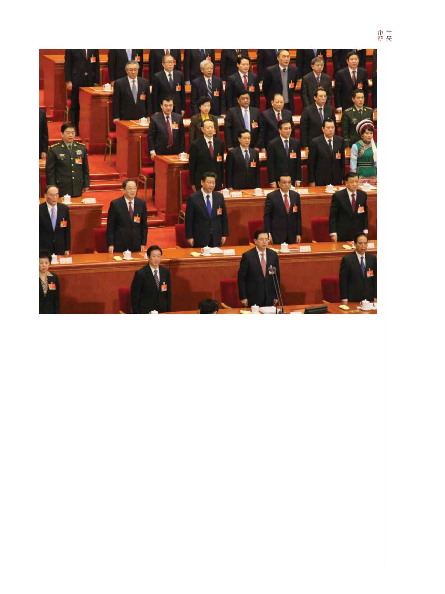

45 / 116
45 / 116


45
人們為何會對合乎道德倫理的領導管理這新
思維感興趣？
我的個人看法是，我們關注全球市場發展的同時，財
富500強及Inc 500強企業均視中國和印度兩大市場為商務擴
展的重點，並大力在各領域進行投資。另一方面，中國企
業亦更積極地瞄準並投資北美及歐洲等地的企業。
雖然人脈仍是在亞洲營商的重要元素，但企業過往以
關係為主導的方式——那是從前預算額有限的年代——已
經起了變化。展望將來，重點將轉移至更嚴格的企業透明
度要求、兩地上市、專業審計和獨立監督等，意味在中國
乃至全球商業生態中，合乎道德倫理的領導管理將逐漸變
成常態。
馬來西亞、菲律賓、南韓、巴西及台灣最近均出現針
對政治領導人的挑戰。這證明要實現企業可持續發展和變
革，國家及企業領導管理均須朝著合乎道德倫理的方向發
展。大眾和三菱等企業最近備受醜聞困擾，顯示問題不僅
存在於中國，亦存在於全球其他地區。
這對管理教育將構成甚麼影響？
首先，我們要知道，中國將教育視為國策的重中之重。
中國幾乎每個星期就迎來一所新的大學，而同樣引人注目的
是，全球至少40%的工程及技術系畢業生，都是中國培育的；
到了2020年，比例將進一步上升至近60%。畢業生人數激增的
同時，最近8年間在中國提交的專利申請數目亦大幅上升。
現時，國會圖書館的藏書數量，每隔4年就翻倍，而商業
管理等課程的相關性與實際性，就更是必須。更重要的是，學
位後商業管理課程須由有經驗的實踐型專家任教。近年來，不
少高級工商管理碩士課程因淪為學員擴展網絡的台階，而飽受
批評。這無疑是不公平的，也是令人尷尬的——這是忽略了
學員獲得的不少益處。學員最終可能會學以致用，在香港、上
海、新加坡乃至本地區其他主要城市促進商務發展。
因此，頂尖的高級工商管理碩士課程及工商管理博士課
程，需迎合市場環境及需要。對管理教育而言，這並不是選
擇，而是有迫切的需要。隨著需求增長，衝突管理、商業與行
為、全球趨勢及社會網絡理論等新興專業課程將應運而生。對
所有人而言，這意味著除終身學習外，並無其它選擇。